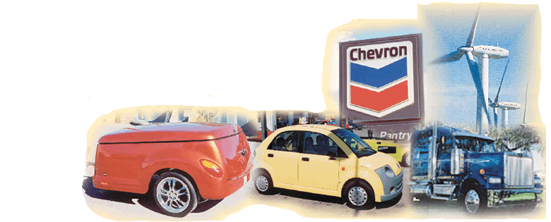
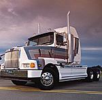
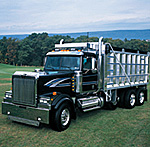
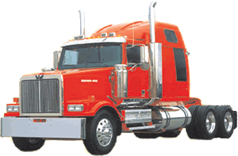
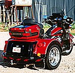

01The Company
Kelowna Industrial Plastics — KIP to everyone who knew it — was a fiberglass and composites manufacturer in the Okanagan Valley. Founded in 1978 as a private, Canadian-based company, it spent more than twenty-five years turning resin and glass fiber into large, complex parts for industries across North America.
From its plant at 3015 Sexsmith Road, a short drive from downtown Kelowna and a few hours from the US border, KIP described itself as a “quality Canadian manufacturer of custom molded composites.” It ran in-house engineering, tooling, prototyping and production under one roof — mold shop, open molding, and vacuum-assisted resin injection — and held ISO 9001:2000 certification from May 1999. The plant ran on departments — mold maintenance, lamination, trimming, finishing, maintenance and purchasing — each with people who knew their trade inside out (see Departments, below).
- Full name
- Kelowna Industrial Plastics (1995) Ltd. — known as KIP
- Plant
- 3015 Sexsmith Road, Kelowna, BC V1X 7S7 · ~40,000 sq ft
- Phone
- (250) 765-4243 · Fax (250) 765-9709 · info@kipltd.com (as listed)
- Also
- A sister plant, KIP South Carolina Inc., ran in North Charleston, SC in the early 2000s
- Website
- www.kipltd.com — active in the early 2000s, long since offline; this site’s colors are taken from it
- Leadership (per the archived site)
- Stephen Anderson, President · Norman Cook, Vice President
- Ownership
- Stephen Anderson and Norman Cook — their fathers founded KIP in 1978 and passed the company on to their sons
KIP’s pitch to the world was simple: low-to-medium production volumes (about 1 to 5,000 parts a year), economical tooling, and parts that came out of the mold ready for paint — or painted to the customer’s own specification.
02The Departments
KIP’s plant ran on departments, and the people who ran them were the backbone of the place:
- Mold maintenance — Earl, Fran and Alex: the dedicated crew keeping all the tooling in working order
- Lamination — hood lamination run by Bruce and Pete, then Marty
- Mold injection lamination — Larry; made the red parts and the grey parts
- Trimming — Hoods — Sean, shop lead
- Trimming — Red Parts — Herb Sr., shop lead
- Trimming — Grey Parts — Herb Sr., shop lead
- Trimming Department — run by Brett and Roger
- Finishing — run by Graham and John
- Maintenance — run by Brad
- Purchasing — run by Wayne
- Quality control — Sarah Clark
- Forklift — run by Ray
- Secretary — Marie
03The Western Star Years
KIP’s main business — and its claim to fame — was building fiberglass hoods for Western Star trucks. Western Star assembled its heavy-duty trucks in Kelowna from the late 1960s, and for decades KIP molded the big, hand-finished hoods that went on them. In a 1999 interview, KIP summed up the relationship:
“We make them and deliver them. Western Star paints them and assembles them.” — KIP, quoted in press coverage, 1999
The hoods were just the start. KIP also supplied fan shrouds, cowls, roof caps, sleeper skirts, air-cleaner panels and fenders — everything delivered sanded to a blemish-free 220-grit surface, ready for Western Star’s paint shop.
The fire that stopped the line
In 1988, a major fire destroyed KIP’s plant. It was more than a local disaster: Western Star was forced to cut production and lay workers off because its hood supplier was gone — a measure of just how critical KIP was to the truck line.
The end of an era
When Western Star’s Kelowna truck plant was announced for closure in 2001 and shut in 2002, the supply chain it had anchored for decades came apart. KIP carried on for several more years, still molding hoods for the Portland-built trucks — until the hood contract went to a Vancouver company. Losing it is what closed KIP, around 2009.
04More Than Hoods
Like many fiberglass shops of its era, KIP used the same molds, layup skills and finishing capacity across a remarkable range of products:
- Heavy truck — Western Star hood assemblies, fan shrouds, cowls, roof caps, sleeper skirts, air-cleaner panels, fenders
- Marine — fiberglass boats under manufacturer code ZIK (outboards, open motorboats, jon boats), built from May 1983; from around 2003, KIP also briefly molded hull shells for Safara (Svfara) ski boats in Kelowna — a short-lived run of a year or two
- Hot tubs & spas — fiberglass spa shells for Okanagan and Western Canadian hot-tub builders
- Car bodies — low-volume fiberglass bodies, including components for Dynasty battery-powered vehicles of Vancouver, BC from 2000
- Signage — a short-lived U.S. division built large fiberglass gas-station signs (Shell, Chevron and others); KIP also marketed its own “Easy Sign” modular sign board
- Recreation — a fiberglass trailer shell for the Chrysler Prowler (the complete trailer was built by Ajax Trailer Corp. of Warren, Michigan)
- Industrial & architectural — RV components, architectural facias, tanks, covers and custom molded parts
05Timeline
- 1978KIP founded in Kelowna, BC, as a fiberglass fabricator
- May 1983Registered as a boat manufacturer (manufacturer code ZIK); builds outboard, open motorboat and jon boats
- 1988Fire destroys the KIP plant; Western Star cuts production and lays off workers
- 1995Re-registered as Kelowna Industrial Plastics (1995) Ltd.
- Dec 1997Boat-building operation recorded as out of business in marine databases
- May 1999ISO 9001:2000 certification
- 2001–2002Western Star announces closure of its Kelowna truck plant (2001) and shuts it (2002)
- ~2009KIP closes permanently after losing the Western Star hood contract to a Vancouver company
06Spotting KIP’s Work Today
KIP’s parts were rarely branded, but they’re still out there. Any boat with a Hull Identification Number starting in ZIK was built by Kelowna Industrial Plastics, sometime between 1983 and 1997. And the big fiberglass hoods on older Kelowna-built Western Stars — 4800s, 4900s and their kin from the ’80s and ’90s — passed through the Sexsmith Road plant, sanded to 220 grit and ready for paint. And if you come across a Safara (Svfara) ski boat from around 2003–2005, its hull shell likely came out of KIP’s molds — though only for a year or two, as Safara never liked paying its bills.
If you worked at KIP, drove a truck with one of its hoods, floated in one of its boats or soaked in one of its tubs, your memories are part of this story. Use the form below to share them.
07The People
KIP was a place you had to know someone to get on — and it showed. It was a company that employed a lot of family and friends of its workers — people cutting fiberglass parts for years alongside family and friends.
The people who worked there took pride in their work and worked extremely hard to make sure the highest quality of fiberglass parts were produced. They enjoyed living in the Okanagan, loved working there, taking care of their families, and being part of the Western Star story.
If you or yours worked at KIP, add your story through the contact form below.
08Gallery
The images below are the survivors — graphics recovered from the archived kipltd.com. Searches of Kelowna newspaper sites and museum archives turned up no photos of the plant, the 1988 fire, or the workforce, so these are all there is for now — and any you share would be a real find.





09Sources
- kipltd.com — archived snapshots, Jan 2001 to Oct 2006 (Internet Archive / Wayback Machine); images and color palette recovered from the same archive
- US Coast Guard / boat-history manufacturer records — Kelowna Industrial Plastics, MIC ZIK (in business as a boat builder 1983–1997)
- 1999 press coverage — “We make them and deliver them. Western Star paints them and assembles them.”
- 1988 newspaper reporting — fire at Kelowna Industrial Plastics; Western Star production cuts and layoffs
- Truck industry histories — Western Star’s Kelowna plant (1967–2002); closure announced 2001
- Business directories — Kelowna Industrial Plastics (1995) Ltd., 3015 Sexsmith Rd, Kelowna BC V1X 7S7
10Say Hello
Worked at KIP, drove a Western Star with one of its hoods, or have photos and stories to share? Drop a line below — messages come straight to the site’s keeper.